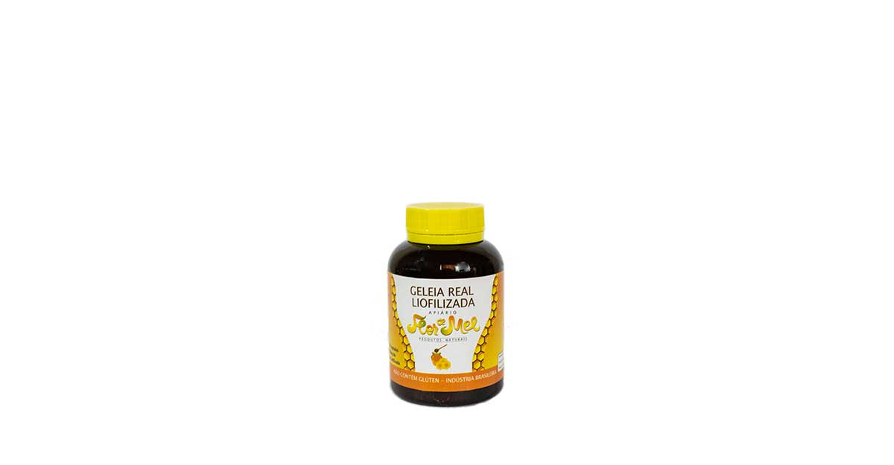

Pólen

O pólen de flores é o melhor multivitamínico e super alimento da natureza. Fonte de vitaminas essenciais, minerais, aminoácidos e enzimas.
Potencializador de energia
A gama de nutrientes encontrados no pólen de flores o torna um ótimo energizador natural. Os carboidratos, proteínas e vitaminas do complexo B podem ajudar a mantê-lo durante todo o dia, aumentando a resistência e ajudando a combater os sinais de fadiga. Muitos atletas usam o pólen de flores como um fornecedor de energia natural para ajudar com a velocidade e a resistência.
- Recomendado para o tratamento de desnutrição infantil devido à presença de ferro, cobre e magnesio
- Auxilia no tratamento da próstata
- Facilita a recuperação da vitalidade em pacientes convalescentes, fracos e com estresse
- Reduz o estado de ansiedade, nervosismo e irritabilidade
- Ele devolve energia e dá vigor a pessoas idosas
- Detoxificante e anti-inflamatório
- Fortalece o sistema imunológico
- Retardo do envelhecimento